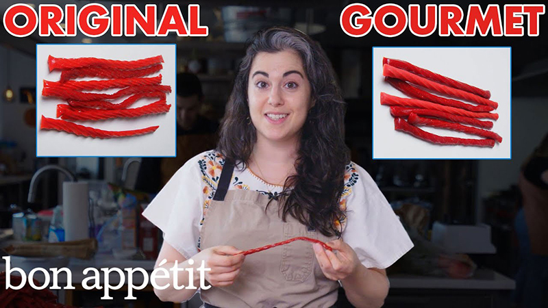

My Favorite Food
Gourmet Twizzlers
This is the best recipe you will ever make!

Ingredients
- Sugar
- Corn Syrup
- Natural Cherry Extract
- Naural Strawberry Extract
- Fruit Concentrate
Directions
- Combine sugar, syrup, cherry/strawberry extracts, and fruit concentrate
- Heat in saucepan
- Bring to boil and clip a candy thermometer to side of pot
- Cook to 240 F
- Transfer to greased surface
- Trim to six-inch lengths and place in rows
- Twist Twizzlers, lengthening ropes then trim edges with a bench scrape
- Let sit at room temperature until set
For more information check out this site